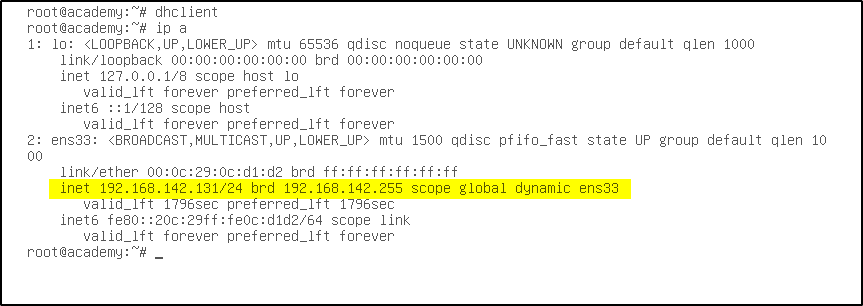

After we run this command than only we were able to see the IP address.
Command : dhclient
Command : ip a

arp-scan -l
Interface: eth0, type: EN10MB, MAC: 00:0c:29:df:c7:24, IPv4: 192.168.142.128
Starting arp-scan 1.9.7 with 256 hosts (https://github.com/royhills/arp-scan)
192.168.142.1 00:50:56:c0:00:08 VMware, Inc.
192.168.142.2 00:50:56:e1:52:bf VMware, Inc.
192.168.142.131 00:0c:29:0c:d1:d2 VMware, Inc.
192.168.142.254 00:50:56:ee:60:90 VMware, Inc.
4 packets received by filter, 0 packets dropped by kernel
Ending arp-scan 1.9.7: 256 hosts scanned in 2.073 seconds (123.49 hosts/sec). 4 responded